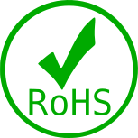
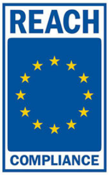
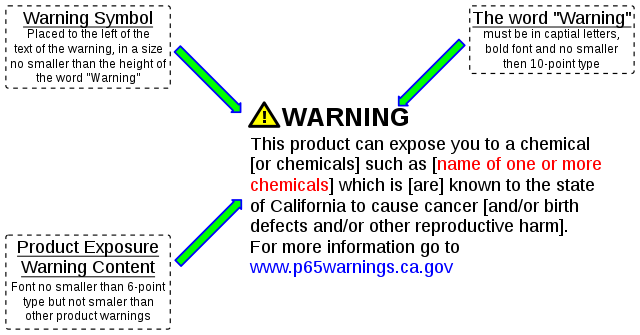

<div class="col-md-8 shadow bg-white mb-5">
  <div class="row m-3">
    <!-- Brand Heading -->
    <div class="col-md-12 d-block">
      <h2 class="text-dark" id="c-brand">Rümzer Docs'</h2>
      <p class="text-body">
        Rümzer Docs provide a brief introduction to RoHS, REACH, and Proposition
        65.
      </p>
    </div>

    <!-- hr -->
    <hr class="shadow mt-3 mb-3 w-100" />

    <div class="col-md-12 d-block">
      <!-- Images -->
      <div class="row justify-content-center">
        <div class="col-md-3">
          
        </div>
        <div class="col-md-3">
          
        </div>
        <div class="col-md-6">
          
        </div>
      </div>
      <br />

      <!-- RoHS -->
      <div class="row">
        <h3 class="text-info md-3">RoHS</h3>
        <p class="text-body mt-3">
          <b>RoHS</b> stands for Restriction of Hazardous Substances, and
          impacts the entire electronics industry and many electrcal products as
          well. The origin RoHS, also known as Directive 2002/95/EC, originated
          in the European Union in 2002 and restricts the use of six hazardous
          materials found in electrical and electronics products.
        </p>
        <br />
        <h3 class="text-info">
          Is Your Organization RoHS Compliant for 2020?
        </h3>
        <p class="text-body">
          Any business that sells applicable electrical or electronic products,
          equipment, sub-assemblies, cables, components, or spare parts directly
          to RoHS-directed countries, or sells to resellers, distributors or
          integrators that in turn sell products to these countries, is impacted
          if they utilize any of the restricted 10 substances. <br />
          <br />
          To know more about RoHS in brief, click
          <button
            class="btn btn-info pl-1 pr-1 pt-0 pb-0 shadow"
            type="button"
            onclick="loadRohs()"
          >
            link
          </button>
          <br />
          For complete reference, follow this
          <a href="https://www.rohsguide.com/" target="_blank">link</a>.
        </p>
      </div>

      <hr class="shadow mt-3 mb-3 w-100" />

      <!-- REACH -->
      <div class="row">
        <h3 class="text-info md-3">
          REACH: Registration, Evaluation, Authorization and Registration of
          Chemicals
        </h3>
        <p class="text-body mt-3">
          <b>REACH</b> is a European Union regulation fating from 18 December,
          2006. It addresses the production and use of chemical substances, and
          their potential impacts on both human and the environment.<br />
          When REACH is fully in force, it will require all companies
          manufacturing or importing chemical substances into the EU in
          quantities of one tonne or more per year to register these substances
          with a new European Chemicals Agency (ECHA) in Helsinki, Finland. It
          also addresses the continued use of chemical substances of very high
          concern (SVHC) because of their potential negative impacts on human
          health or the environment. <br />
          <br />
          To know more about REACH in brief, click
          <button
            class="btn btn-info pl-1 pr-1 pt-0 pb-0 shadow"
            type="button"
            onclick="loadReach()"
          >
            link
          </button>
          <br />
          For complete reference follow this
          <a
            href="https://echa.europa.eu/regulations/reach/understanding-reach"
            target="_blank"
            >link</a
          >.
        </p>
      </div>

      <hr class="shadow mt-3 mb-3 w-100" />

      <!-- Prop 65 -->
      <div class="row">
        <h3 class="text-info md-3">
          California Proposition 65
        </h3>
        <p class="text-body mt-3">
          <b>Proposition 65</b>, officially known as the Safe Drinking Water and
          Toxic Enforcement Act of 1986, was enacted as a ballot initiative in
          November 1986. The proposition protects the state's drinking water
          resources from being contaminated with chemicals knwon to cause
          cancer, birth defects or other reproductive harm, and requires
          businesses to inform Californians about exposures to such chemicals.
          It requires the state to maintain and update a list of chemicals known
          to the state to cause cancer or reproductive toxicity. <br />
          <br />
          To know more about Proposition 65 in brief, click
          <button
            class="btn btn-info pl-1 pr-1 pt-0 pb-0 shadow"
            type="button"
            onclick="loadProp65()"
          >
            link
          </button>
          <br />
          For complete reference follow this
          <a href="https://oehha.ca.gov/proposition-65" target="_blank">link</a
          >.
        </p>
      </div>
    </div>
  </div>
</div>
